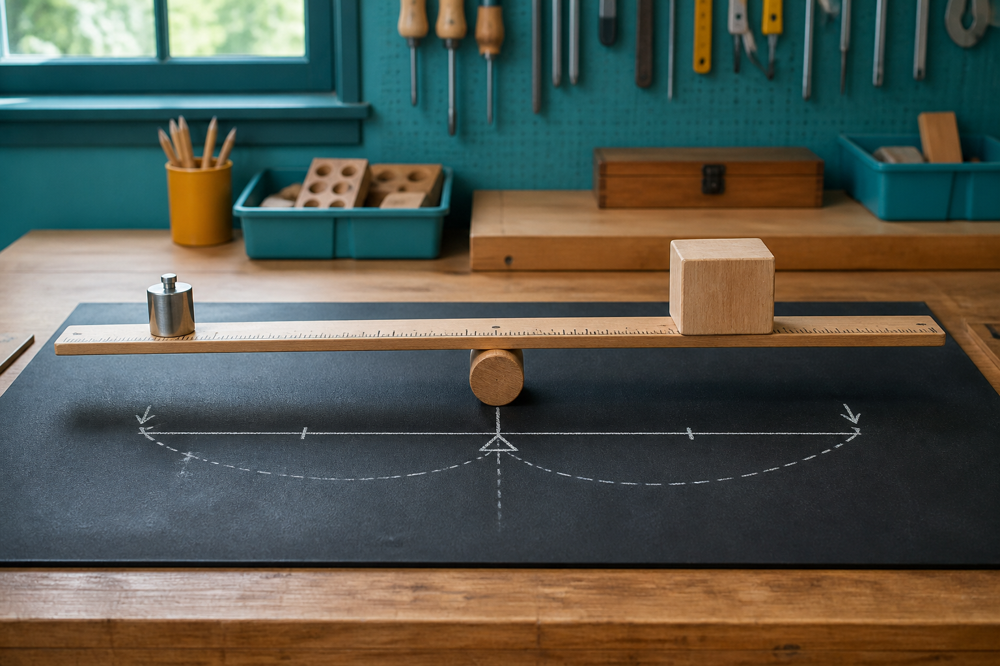
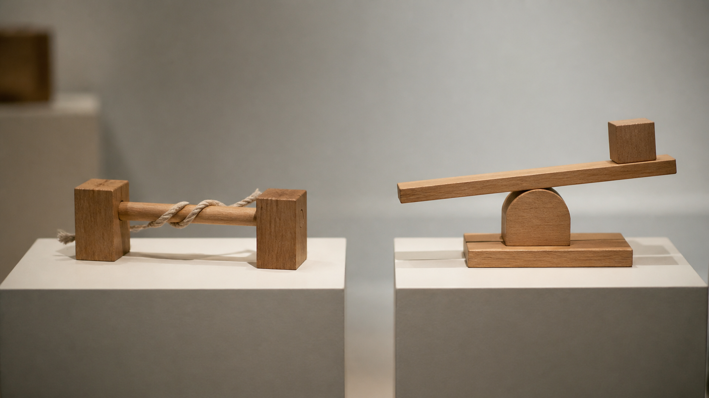
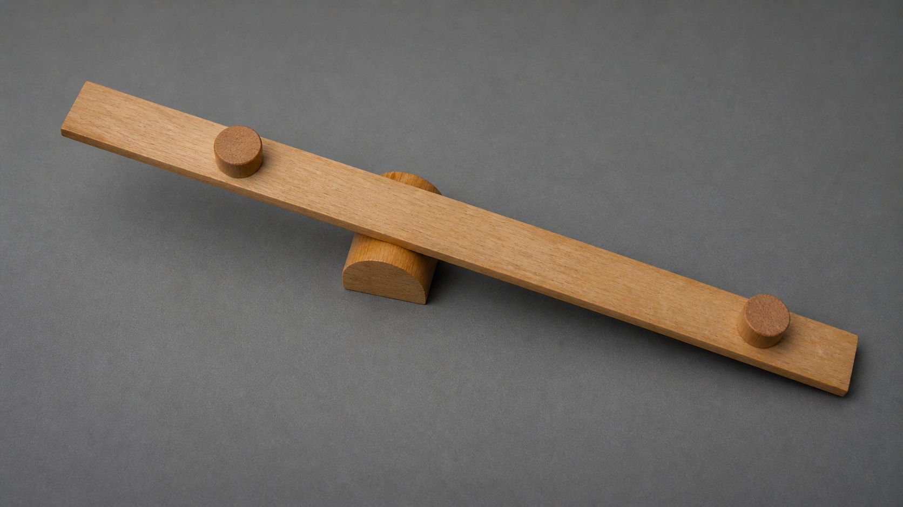
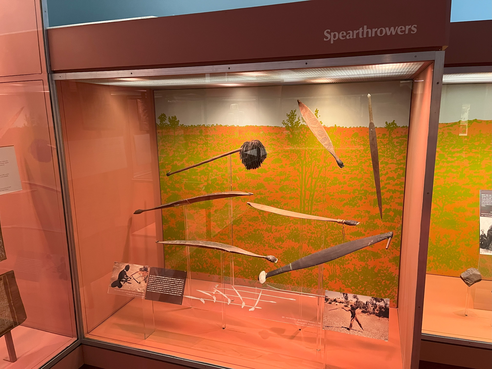

All siege engines work like large versions of the same catapult.
Historical systems used different energy stores and component relationships, so they must be compared at system level.
Module 3 of 10
Engineered systems can solve a similar broad function in very different ways. Historical siege engines provide examples of changing energy stores and component arrangements. Lever theory then helps explain force-and-motion trade-offs. Learning about Aboriginal technologies requires a different, respectful context grounded in authoritative Aboriginal-led sources rather than comparisons that flatten distinct purposes and knowledge systems.
Use this page to learn and prepare. Follow your teacher's demonstration, approved tools, local safety controls and testing instructions for every practical action.

Theory 1 of 3
An onager, ballista and trebuchet are all historical projectile systems, but they do not store and transfer energy in the same way. An onager and a ballista are associated with twisted material storing torsional energy, while a counterweight trebuchet begins with gravitational potential energy in a raised mass. Their frames, moving components and release arrangements therefore solve different engineering problems even when the broad output appears similar.
Comparing systems is more useful than memorising names. Ask where energy is stored, which component moves, how the frame manages forces, what must be reset, and what trade-offs the designers faced. This approach keeps the focus on engineering rather than warfare. It also prevents a common mistake: assuming that objects with a similar purpose must have the same internal system.
Knowledge check
Choose an answer, read the feedback, then try again if needed. This is saved as practice on this device.

Theory 2 of 3
A lever is a rigid member that turns around a fulcrum or pivot. The effort is the input force, and the load is the resistance the system acts on. The effort arm is the distance from the pivot to where the effort acts; the load arm is the distance from the pivot to the load. A moment describes the turning effect of a force and depends on both the force and its perpendicular distance from the pivot.
Changing arm lengths changes the balance between force and movement. Applying the same effort farther from the pivot creates a larger turning effect, while points at different distances from the pivot travel through different paths during the same rotation. There is no free energy: gaining an advantage in force or movement brings another trade-off. Engineers consider the whole system, including the frame, pivot, stiffness, alignment and available motion, rather than treating lever length as an isolated trick.
Knowledge check
Choose an answer, read the feedback, then try again if needed. This is saved as practice on this device.

Theory 3 of 3
In a public South Australian Museum explanation, Jared Thomas identifies himself as a Nukunu person and museum curator before discussing an object commonly called a woomera or spear-thrower. He explains that it can extend the user’s arm, so its lever action helps apply force and increase the spear’s speed. He also demonstrates several practical functions, which is important evidence that the object should not be reduced to one military purpose.
This is one attributed public explanation, not a universal account. Forms, names, uses and connected knowledge vary across Countries. A lever diagram can help us notice one mechanics relationship, but it cannot represent the whole technology, its cultural meaning or the knowledge held by Aboriginal peoples. Do not rank it against siege engines or treat it as a stage on the way to a European machine; learn the source, speaker and context first.
Knowledge check
Choose an answer, read the feedback, then try again if needed. This is saved as practice on this device.

Worked example
Vocabulary
Common traps
Historical systems used different energy stores and component relationships, so they must be compared at system level.
Lever geometry changes force-and-motion trade-offs; it does not create energy.
Video learning · 3:09
South Australian Museum
Watch for: How does the spear-thrower extend the user’s lever, and what does Jared Thomas show that prevents us reducing it to a single-purpose ‘weapon’?
Source boundary: Name Jared Thomas as a Nukunu person and museum curator. Do not generalise, rank or reconstruct cultural knowledge.

Read the attributed Jared Thomas summary and inspect the neutral lever schematic. Keep the statement that forms, names and uses vary across Countries.
The privacy-enhanced player loads only when you choose it.
Applied Learning Activity
Practise comparing systems through energy, components and lever relationships while keeping cultural context visible.
Evidence to save: Comparison matrix, lever explanation and cultural-source decision, saved as formative practice.
Type the response, reasoning or record requested above. It autosaves in this browser.
Use: ‘Both systems ___. They differ because ___. This matters because ___.’
Find a second authoritative explanation of one historical system and note whether it confirms or complicates the first account.
Higher-order evidence
Compare two historical siege-engine systems at system level, then explain how the woomera should be discussed as a separate Aboriginal technology with its own purpose and context.
Type your response. No drawing is required. It autosaves in this browser.